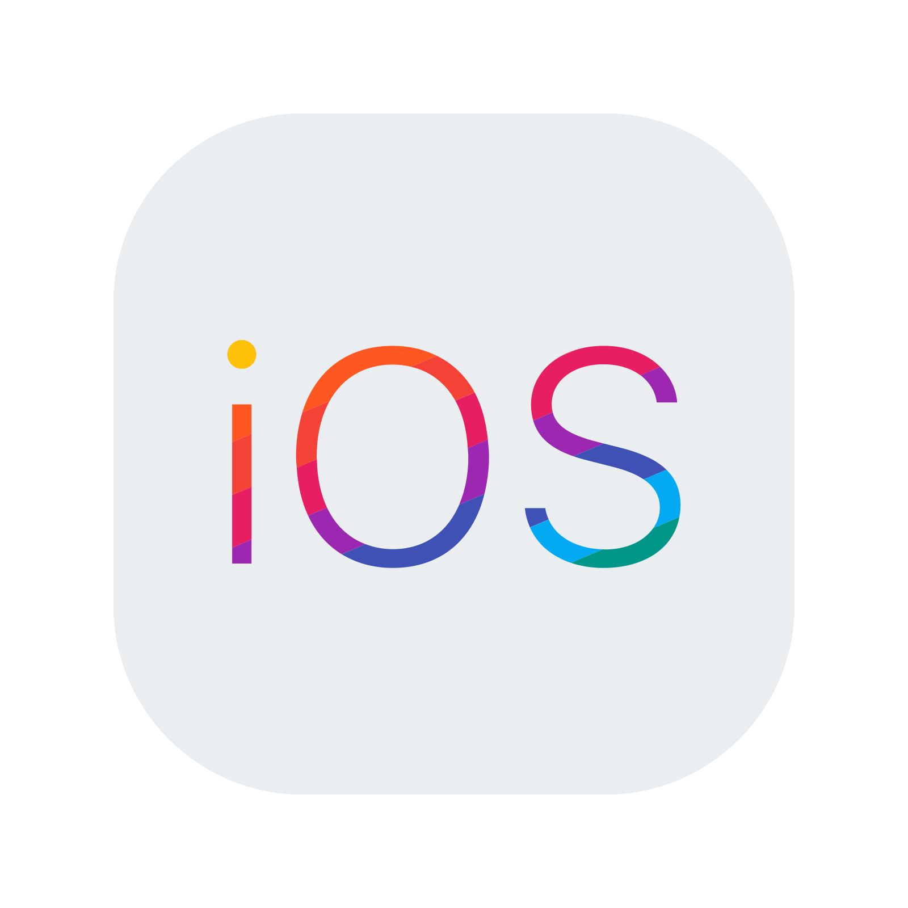

Should You Switch to iOS from Android? Here's What You Need to Know
The debate between iOS and Android has been going on for years, with each platform having its own loyal fanbase. But if you’re considering making the switch from Android to iOS, you might be wondering whether it’s the right choice for you. Let’s break down the key reasons to switch, along with some factors to consider before making the leap.

1. Smooth User Experience
One of the biggest advantages of iOS is its smooth and consistent user experience. Apple's tightly controlled ecosystem ensures that software and hardware are optimized for each other. This results in fewer bugs, faster updates, and a seamless performance across devices. If you're frustrated by the fragmentation and delayed updates on Android, iOS can offer a refreshing change.
2. Software Updates and Longevity
iOS devices, including iPhones, receive regular and timely software updates for years after their release. An iPhone can get the latest iOS updates for 5-6 years, while Android devices often lag behind due to manufacturer-specific updates. If having the latest features and security updates is important to you, iOS provides long-term support that Android sometimes struggles with.
3. Privacy and Security
Apple emphasizes privacy and security, with features like App Tracking Transparency and strict app store policies. iOS is generally considered more secure due to its closed ecosystem and controlled app vetting process. If privacy is a priority, iOS gives you peace of mind with its strong security protocols.
4. Integration with Other Apple Devices
If you already own other Apple devices like a MacBook, iPad, or Apple Watch, switching to iOS will unlock the full potential of the Apple ecosystem. Features like Handoff, Continuity, and AirDrop allow seamless connectivity between your devices, making tasks like transferring files, taking calls, and syncing messages effortless.
5. App Quality and Optimization
While both platforms have millions of apps, developers often prioritize iOS optimization. Many apps are released on iOS first, and sometimes iOS versions of apps are smoother or feature richer compared to their Android counterparts. For those who care about app quality and early access to new releases, iOS is often ahead.
6. Customer Support and Resale Value
Apple’s customer support is widely praised, with options like AppleCare+ and direct support from Apple Stores. Additionally, iPhones retain their resale value much better than Android devices, making an iPhone a better long-term investment.
Things to Consider Before Switching
Customization:
If you enjoy customizing your phone’s layout, interface, and features, you might miss the flexibility Android offers. iOS is more restrictive in terms of user control.
File Management:
Android allows for easy file transfer and access to your phone’s internal storage, while iOS relies on iCloud or iTunes for file management, which can be a downside for some users.
Price:
iPhones are typically more expensive than many Android options. If you’re used to budget-friendly Android devices, the cost of an iPhone might be a factor to consider.
Should You Make the Switch?
Switch to iOS If:
You prioritize privacy, security, seamless performance, and want to be part of the Apple ecosystem. iOS is also ideal if you’re looking for long-term software support and higher resale value.
Stick with Android If:
You enjoy customizing your phone, need more hardware options (like foldable phones or budget models), or prefer the freedom of open-source systems. Android still excels in variety and flexibility.
Written by Vaibhav Raj
September 22 2024 / 1:00 PM